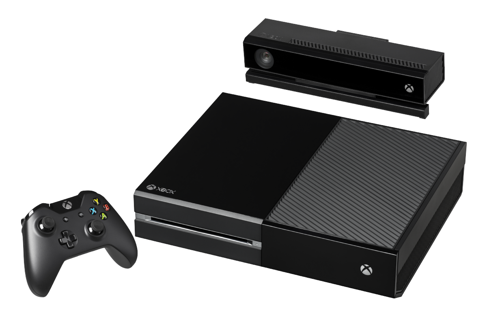

Es el servicio prestado por la división de videojuegos perteneciente a
la compañía. Atiende los juegos multiplayer para las consolas Xbox y juegos para
los teléfonos inteligentes de la compañía. El soporte para estos videojuegos puede
ser gratuito o pago dependiendo del contenido que el usuario requiera.
Este incluye descargas de contenido, el cual puede ser gratuito o pago; tiene
plataforma para multijugador en línea; la opción de chatear por voz en directo;
poder utilizar en línea otras plataformas externas; capacidad de almacenar datos
en una nube, que pueden ser compartidos con otros usuarios; entre otras prestaciones.
Xbox
Fue la primera videoconsola de esta compañía en asociación con Intel,
que vendió 24 millones de unidades en todo el mundo. Tiene como principales características:
Procesador central de 32 bits inspirado en la de la Pentium III.
Su disco duro tiene una capacidad de 8 gigabytes en su primera versión y 10 en las siguientes.
Descarga contenido de Xbox Live.
Su estructura externa fue similar a las PC.
Cuatro puertos S-USB para sus controladores inalámbricos y un puerto RJ-45 Fast Ethernet.
Adaptador para televisores sin conexiones de video y audio.
Los medios soportados permitidos son el DVD, CD, DVD-R, MP3 y WMA en CDs, entre otras.
Xbox 360
Microsoft-5 Consola sucesora de la Xbox, que contó con la cooperación de AMD e IBM.
Esta permitió que los jugadores se conectaran en línea para jugar y descargar material de
Xbox Live mediante pago. Este modelo salió al mercado en 2006, rivalizando con las consolas
de sony y nintendo. Aunque está descontinuada, su servicio en línea sigue disponible.
Sus características son:
Su unidad de procesamiento gráfico y procesamiento central le permiten 8 horas
continuas de juego, que se apagará cuando se recaliente.
Puerto que permite adaptar un disco duro externo
Puertos de entrada USB 2.0.
Sus accesorios son compatibles con la PC.
Xbox One

Fue la consola sucesora de Xbox 360, lanzada en 2013 para competir con Nintendo Switch
y PlayStation 4, otorgando al jugador una experiencia del juego más intensa.
Sus características son:
Su GPU con tecnología AMD es más fuerte que del Xbox 360.
Gráficas más realistas por su tecnología de mayor rendimiento con su nueva API Direct X-12.
Su control de mando es similar a la de las versiones anteriores, pero con vibración autónoma
en sus gatillos y conectividad Bluetooth 4.0.
Capacidad para material con una alta resolución de 4K en video, imágenes
y juegos por la nube.
Su memoria RAM de 8 GB, procesador de 8 núcleos y otras características técnicas,
hacen de este modelo uno de los más rápidos y de mejores gráficos.
Puede recibir señales de televisión paga a través de los decodificadores.
A través de su puerto HDMI recibe señales de video secundarias de una PC, otras consolas
o Blu-Ray.